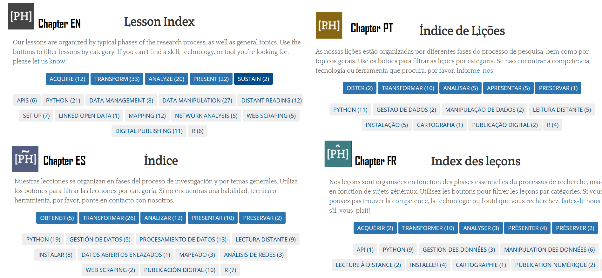
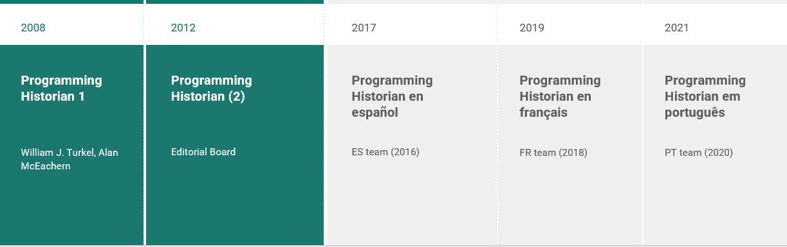
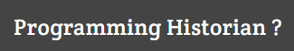
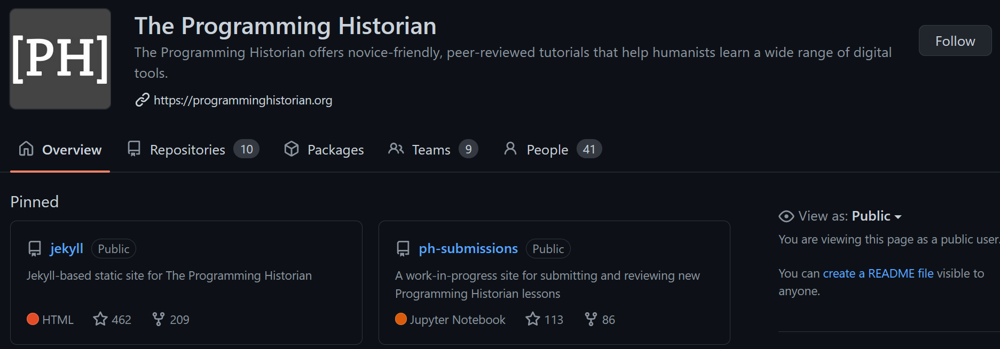
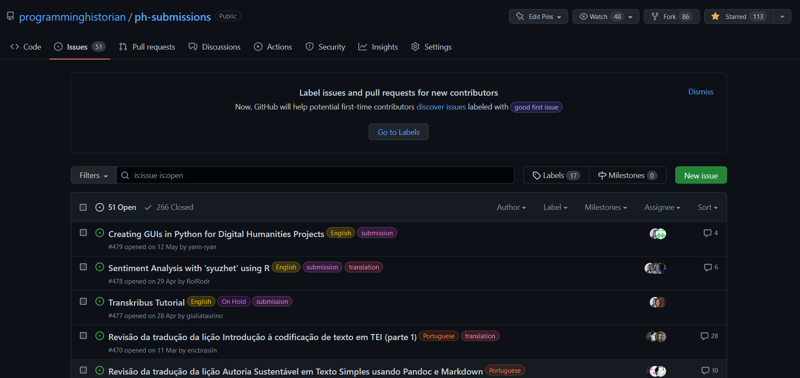

Le programming historian
Revue méthodes en ligne
https://programminghistorian.org/
Tutoriels pour l’appropriation des méthodes et outils numériques appliqués à l’histoire et autres SHS
Identité

-
4 versions langangières à l’heure actuelle: EN, ES, FR, PT
-
Libre accès (modèle économique: diamond open access)
-
Licences libres CC-BY 4.0
-
Evaluation ouverte par les pairs
-
Logiciels et technologies libres
-
Données ouvertes
Leçons
Chapitres linguistiques
181 Leçons -> 141 originales (toutes langues confondues)

-
EN : 89 leçons depuis 2012 (toutes originales)
-
ES : 55 leçons depuis 2017 (traductions + 11 originales)
-
ES : 21 leçons depuis 2019 (traductions + 2 originales)
-
FR : 23 leçons depuis 2021 (traductions)
Leçons
Organisation et indexation thématique

- Organisées pour intégrer l’une des phases de recherche:
Acquérir / Transformer / Analyser / Présenter / Préserver
- Indexation thématiques :
languages (R / Python) / données (gestion/manipulation) / Logiciels libres / Publications…
Histoire
Programming Historian 1: 2007-2011
William J. Turkel, Alan MacEachern
“an open-access introduction to programming in Python, aimed at working historians (and other humanists) with little previous experience”
- William J. Turkel and Alan MacEachern, The Programming Historian 1st edition (Network in Canadian History & Environment: 2007-2008).
Histoire
Intertionalisation

Programming Historian (EN) à partir de 2012 avec comité éditorial (revue)
Internationalisation progressive (et rapide)
59 rédacteurs/rédactrices de 2012 à juin 2022 => comité editorial composé de volontaires & 39 rédacteurs/rédactrices actuellement
Evolutions et perspectives

- 2019: ProgHist Ltd. - association à but non lucratif
=> Partenariats institutionnels,
=> soutiens individuels
- Depuis 2021: professionnalisation partielle avec embauche d’une assistante éditoriale
=> vers un modèle mixte volontariat/externalisation
Une démarche

- qui s’inscrit dans le libre et l’ouverture
- qui s’appuie sur une communauté
- qui promeut la diversité culturelle via le multilinguisme
Lieu d’interactions et de collaborations
=> Travailler en humanités numériques : collaborations, complémentarités et tensions

- infrastructure
- le PH comme communauté de pratique
- multilinguisme
- évaluation ouverte par les pairs
Infrastructure - Pourquoi github ?
- Répondre aux besoins de l’équipe éditoriale: travail à distance, travail volontaire
==> temps individuels, différents fuseaux horaires… (cf. Blevins 2015)
- Gérer le volet international du PH et l’ajout de nouvelles équipes langagières
(cf. Lincoln 2020)
- Gérer le processus éditorial d’un nombre accru de leçons
- Gérer le côté social/technique du PH de manière transparente, ouverte et documentée : tickets (issues) avec labels d’intérêt spécifique (selon équipe langagière et autres domaines )

Github - Outil de gestion éditoriale

Github - Outil de gestion éditoriale

- Gérer le côté social/technique du PH de manière transparente, ouverte et documentée :
- tickets (issues) avec labels d’intérêt spécifique (selon équipe langagière et autres domaines: finance, lesson maintenance, technical…)
- wiki avec documentation
Communauté de pratique
Lire le PH en tant que communauté de pratique selon (Wenger 1998)
Domaine d’intérêt partagé ⇒ appropriation des méthodes numériques en SHS via l’autoformation
Pratique de partage de ressources ⇒ tutoriels (connaissances, pratiques, données, expérience…)
Engagement d’une communauté ⇒ équipe éditoriale (principes d’inclusivité, de parité) ⇒ contributeurs / contributrices: auteur(e)s, évaluateurs/évaluatrices, traducteurs/traductrices ⇒ soutiens, partenaires (==> évolution vers un modèle mixte avec externalisation/rémunération de certains services)
Communauté de pratique
Programming Historian en français
- 43 contributeurs
- Une concentration géographique autour de centre universitaire :
- Paris (Ecole des Chartes / Sorbonne / Versailles) / Lyon (ENS & ENSIB) / Lille / Bordeaux
- Plusieurs institutions de recherches (ENS / LARHRA / CNRS / INRIA ) [AJOUTER ROLE]
Communauté de pratique
Fréquentation géographique du site
GAnalytics pour juin 2021-juin 2022 - 875 451 utilisateurs uniques (1 137 093 sessions)
| USA |
140621 |
| Inde |
102387 |
| Espagne |
63993 |
| Mexique |
52057 |
| Colombie |
46692 |
| France |
36445 |
| UK |
36350 |
| Allemagne |
27057 |
| Argentine |
25462 |
| Chili |
25377 |
Multilinguisme - traduction
Travail éditorial considérable autour de: - ressources bibliographique reliées (hyperliens, références bibliographiques, notes) - données - traduction du code (question éternelle: jusqu’où doit/peut-on aller?)
Problème envisagé jusqu’à maintenant depuis l’angle EN=> vers les autres langues MAIS: 2022, traductions ES=>EN, FR=>EN, ES=>PT - début d’une tendance inverse?
[Commentaire aussi: Objectif de la partie: démontrer comment on fait au PH pour “travailler en humanités numériques” au sein d’une équipe internationale]
Evaluation ouverte par les pairs
[Décrire les éléments clés de la procédure d’évaluation par les pairs, cf. consignes aux rédacteurs et s’inspirer de l’expérience de chacun: Matthias pourrait ajouter/évoquer la possibilité de l’évaluation fermée très somairement sans plus je mentionne mais très rapidement]
PH est attaché aux principes de l’évaluation ouverte par les pairs, un modèle de validation du savoir scientifique qui se répand de plus en plus dans le monde académique.
Excepté demande du ou de l’autrice de la leçon de passer par une évaluation non publique (demande très rare et que PH n’encourage pas), l’intégralité du processus de révision du texte de la future leçon est disponible en accès libre via une issue github, qui est la meilleure solution technique trouvée par PH, comme vu plus haut. (DIAPO, capture).
Evaluation -interet de la démarche
Plusieurs intérêts à ce processus: - garantir un processus d’évaluation correct et courtois pour toutes les parties - valoriser le travail de toutes les parties ayant pris part à la production de la leçon: auteur/ice, mais aussi éditeur/ices et évaluateur/ices. [diapo] - éventuellement d’un point de vue interne, servir de base pour les futures leçons et construire une identité scientifique et éditoriale au fur-et-à-mesure de la création de nouvelles leçons.
Processus:
- soumission à comité qui accepte ou pas (ensemble des éditeur/ices)
- acceptation avec conseils de modification
- allers-retours entre évaluateurs/ices et auteur/ice
- l’éditeur a tendance à synthétiser les retours des evaluateurs pour faciliter la correction de la leçon
- publication finale